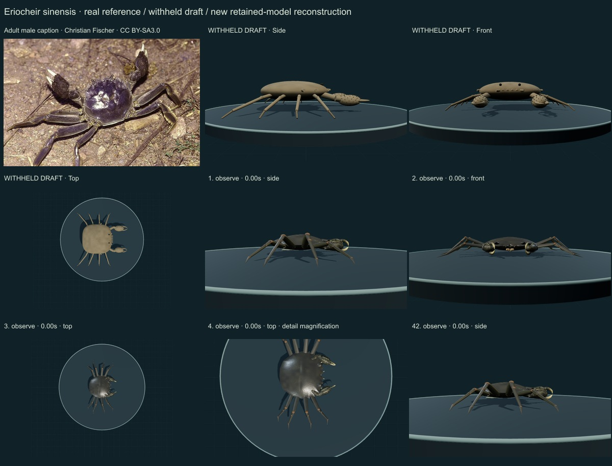
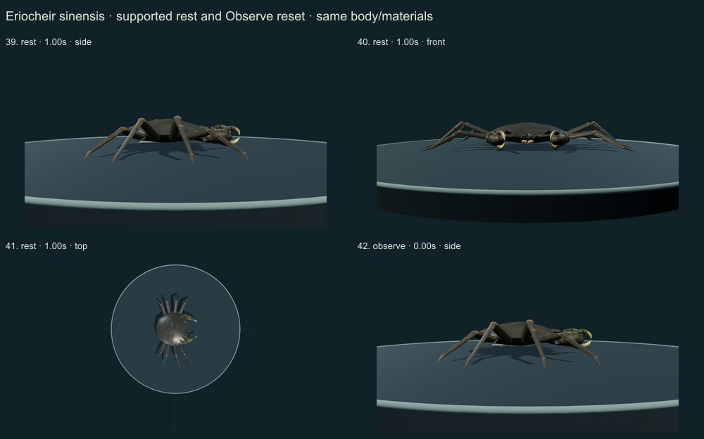
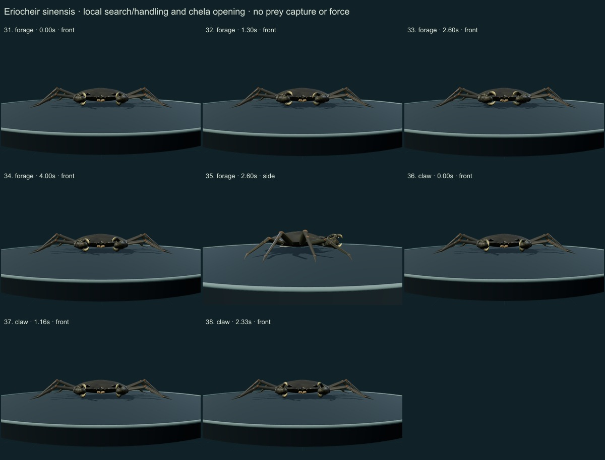
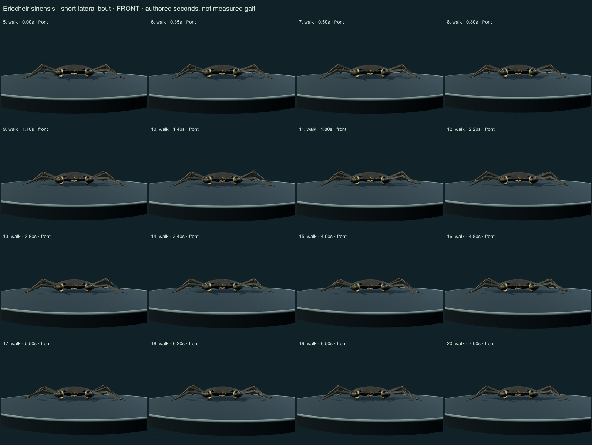
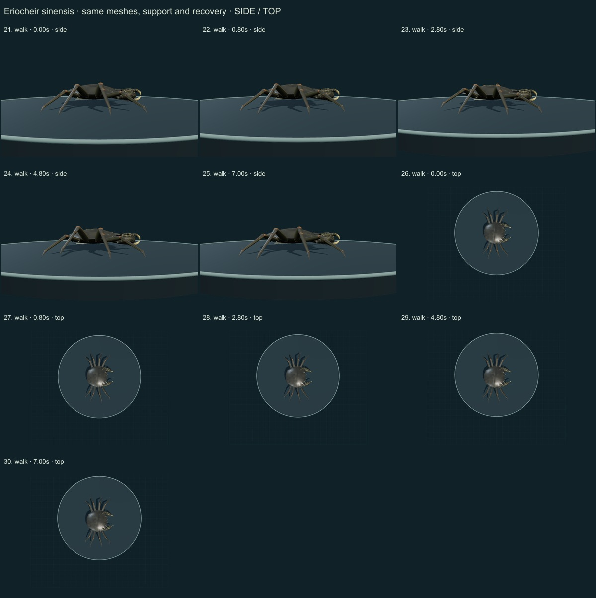

This three-species release reaches 257 / 550 after verified publication. 43 saved drafts remain withheld; 293 species remain to reach 550, including 250 without saved drafts. Release register. This record is an unmeasured educational reconstruction, with incomplete fine anatomy and biological dynamics.
Selected Sakai2013 diagnosis printed1127 and actual frontal comparison figure1C printed1113 were inspected. Christian Fischer’s authentic male photo was viewed. GBIF accepted identity checked. Smithsonian NEMESIS description was available in an indexed excerpt; later direct full-page requests timed out. The separate SERC Watch page rejected direct retrieval/403; this failure remains disclosed.
Authentic photograph: Christian Fischer · CC BY-SA 3.0. Christian Fischer caption identifies a defensive male on land near the Elbe. This is a selected dark adult male study, not proof of all color forms or a calibrated scan; the supported quiet/walking controls do not reproduce the source defensive display. Resized inside 1000 px, flattened and JPEG encoded; no generative alteration. Source/download/local checksums remain in the linked data. No generated photograph, independent species determination or material calibration is implied.
A convex rounded-quadrangular shell has four side teeth with a reduced fourth, four frontal teeth and a V-shaped median notch. Long eight-legged support, narrow pointed final legs, nearly equal hairy palms, white finger tips and a simplified male ventral cover replace the sparse generic draft.
Dense attached short dark claw setae replace scattered hair rods. A smoother dark cuticle with restrained variation, paler limb undersides and distal leg fringes replaces uniform tan pigment.
Remaining: Shell outline, cristae, eye sockets, leg ratios and joint axes remain unmeasured. The hair field is an authored approximation without calibrated density or wetness. Maxillipeds, sternites, gills and pleopods are incomplete. The selected male photograph shows a defensive display; the supported study does not reproduce that display, burrowing or migration.
Same geometry and materials across a short authored lateral bout with planted support and lifted recovery, local chela/antennule handling, finger opening, quiet support and Observe reset. Eight pointed walking legs remain distinct from swimming paddles.
Limits: No species-measured coordinates, biological frequency, joint limits, forces, fluid dynamics, sensory physiology, food contact or ingestion. No validated sleep, development, courtship or migration. Fixed-length/support tests are software consistency checks, not empirical biomechanics.
42 actual final nonblank main-viewer side/front/top, enlarged detail and action/posture states inspected individually on labelled sheets. Superseded frames excluded. Authentic source photo compared; scoped evidence distinguished from complete source review. Qualitative author assessment, without specialist credentials or independent validation.





Software checks sample fixed segment lengths, planted stance consistency, support, finite poses, floor clearance, retained geometry/materials and reset. Passing them does not validate empirical biomechanics. There is no measured accuracy percentage, independent expert certification or physiological simulation. Existing 254 species objects, including credited wolf/tiger behavior meshes, are unchanged.
Original mesh/material/controller code is MIT; reference photographs retain their exact creator licenses. Legacy Protista/Monera are reporting conveniences, with modern lineage/domain fields retained. Recorded occurrences are not native-range boundaries.
Per-frame findings, source scopes and checksums · Open model